What is this
ClocXというソフトのための着せ替えが入ったファイルをリポジトリ化しているので､その中身を公開するページです｡ClocXはタスクバー隠す勢にとっての救世主です｡(アナログ時計で時間を見られるという点で)
RepositoryからDLできます｡どうぞご自由にご利用ください｡
| 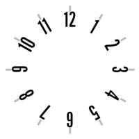 | 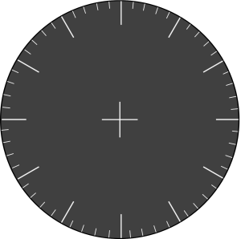 | 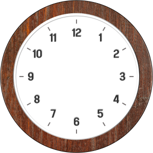 | 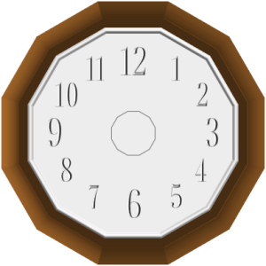 |
|---|---|---|---|
| c-skeleton | thin | circle | tntk |
| 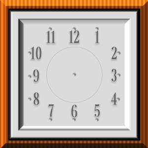 | |||
| square0 |
| 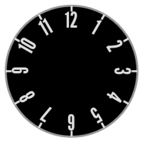 | 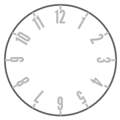 | 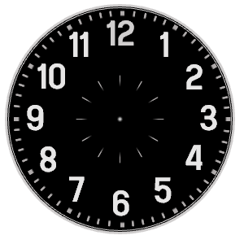 | 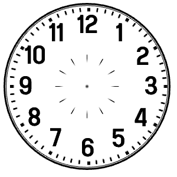 |
|---|---|---|---|
| smart_b | smart_w | tokei_b | tokei_w |
| 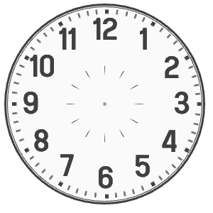 | 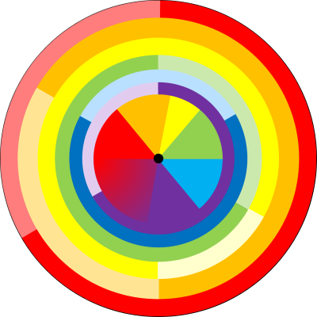 | ||
| tokei_g | weird_rainbow |
| minimal100x100 | minimal_green |
| tiny50x50 | black | white | green | pink | red | light blue | yellow | blue |